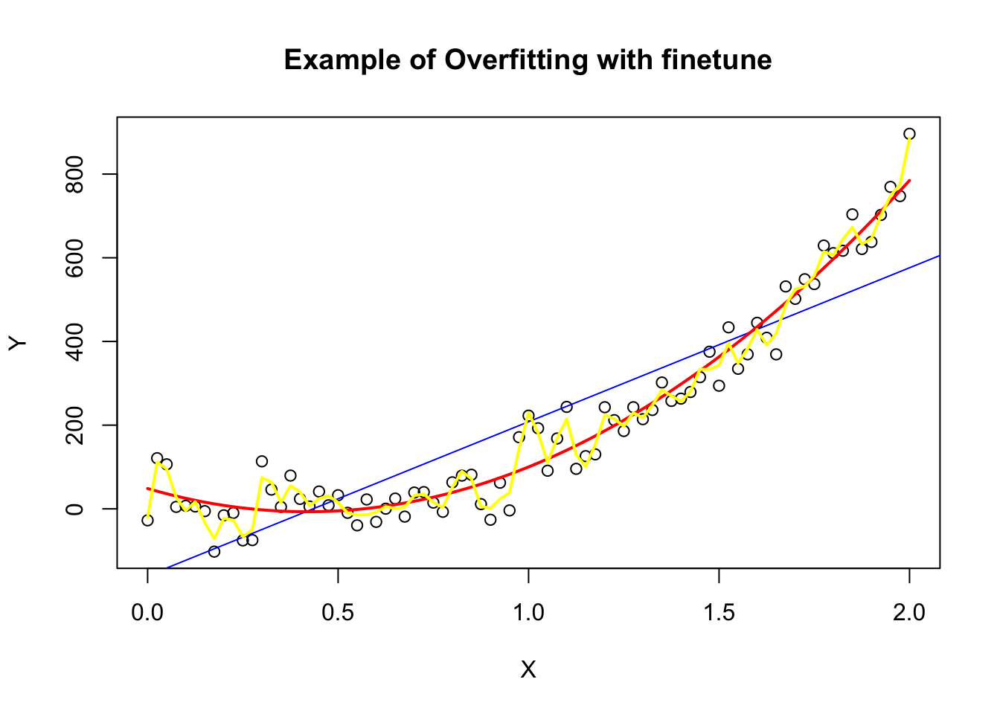

$lm1
Estimate Std. Error t value Pr(>|t|)
(Intercept) 3.0000909 1.1247468 2.667348 0.025734051
x1 0.5000909 0.1179055 4.241455 0.002169629
$lm2
Estimate Std. Error t value Pr(>|t|)
(Intercept) 3.000909 1.1253024 2.666758 0.025758941
x2 0.500000 0.1179637 4.238590 0.002178816
$lm3
Estimate Std. Error t value Pr(>|t|)
(Intercept) 3.0024545 1.1244812 2.670080 0.025619109
x3 0.4997273 0.1178777 4.239372 0.002176305
$lm4
Estimate Std. Error t value Pr(>|t|)
(Intercept) 3.0017273 1.1239211 2.670763 0.025590425
x4 0.4999091 0.1178189 4.243028 0.002164602
# Preparing for the plotsop <-par(mfrow =c(2, 2), mar =0.1+c(4,4,1,1), oma =c(0, 0, 2, 0))# Plot charts using for loopfor(i in1:4) { ff[2:3] <-lapply(paste0(c("y","x"), i), as.name)plot(ff, data = anscombe, col ="orange", pch =21, bg ="orange", cex =1.2,xlim =c(3, 19), ylim =c(3, 13))abline(mods[[i]], col ="blue", lwd =1.5)}mtext("Anscombe's 4 Regression data sets", outer =TRUE, cex =1.5)
Examples With Overfitting Finetune
x <-seq(0, 2, by =0.025)y <-5+3*x^2+100*x^3+rnorm(length(x), 0, 50)z <- x^2set.seed(2022)linearmodel <-lm(y ~ x) #model fittingtestx <-seq(1.1, 1.5, by =0.025)testy <-5+3*testx^2+100*(testx)^3+rnorm(length(testx), 0, 20)predict_linear <-predict(linearmodel, list(x= testx)) #prediction on test data setquadraticmodel <-lm(y~ x + z) #fittingpredict_quadratic =predict(quadraticmodel, list(x = testx, z = testx^2)) #prediction on test data setsmoothspline <-smooth.spline(x,y,df =50) #fitting predict_spline <-predict(smoothspline, testx)$y #prediction on test data setseq <-seq(min(x), max(x), by =0.001)predict <-predict(quadraticmodel, list(x = seq, z = seq^2))par(mfrow=c(1,1))plot(x,y, xlab ="X", ylab ="Y", main ="Example of Overfitting with finetune" )abline(linearmodel, col ="blue", lwd =1)lines(seq,predict, col ="red", lwd =2)lines(smoothspline, col ="yellow", lwd =2)

Change Chart with ggplot2
library(ggplot2)ggplot(anscombe, aes(x=x4,y=y4)) +# create coordinate systemgeom_abline(col="blue") +# create line with custom colorgeom_point(col="orange", lwd=3) +# create points with custom size and colorxlab("x") +# change x labelylab("y") +# change y labelscale_y_continuous(limits=c(2, 10)) +# change y axis limitsscale_x_continuous(limits=c(4, 15)) # change x axis limits